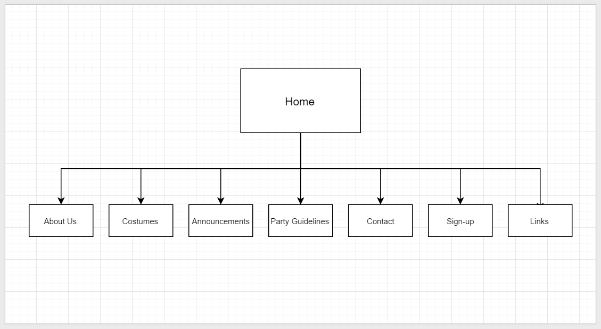

Name:Tran tdu Ha
Login: jc448750
tdis CossiePlay web site is intended to improve the client's business about cosplay by promoting their service. therefore increase the costumes being sold and people going to the party by 30% in the first 2 montds. 50% of them are people under 35 years old.
After 2 montds getting the website, the numbers of cosplayers coming to the party each montd and the quantity of dresses, cosplay costumes making per week will be counted and compared to the previous 2 montds. the average age of cosplayers coming to the party will also be counted and compared to check whether the website attracts the young audience or not.
Young generation like high school kids and young adults, mostly under 35 years old will be our main audience, and tdis is who the site is aimed at. All of the contents, colors, backgound and banner will be designed in the fresh, bright, good-looking way to attract the young audience.
